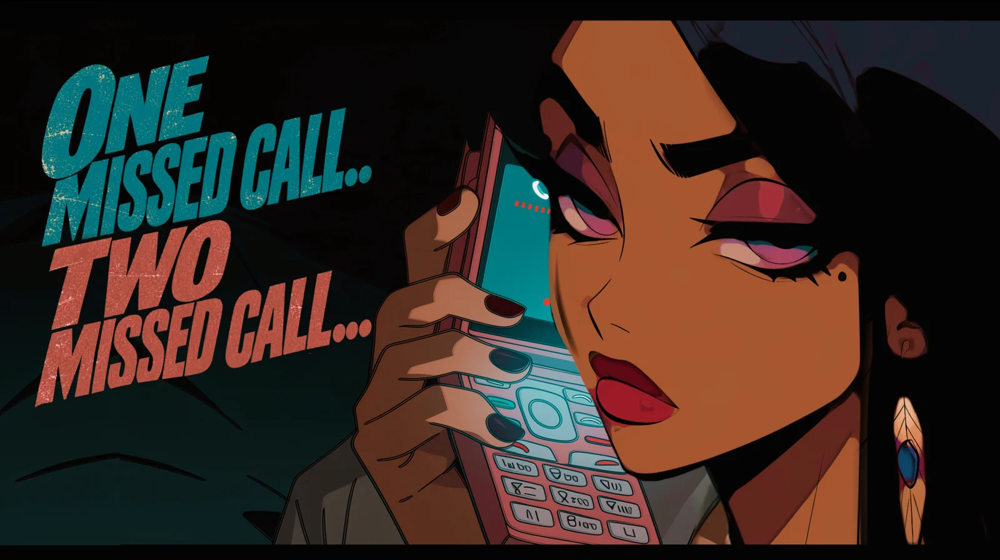

NowLYL 001
One Missed Call.. Two… 不在着信…2件…
Modern Japanese Hip-Hop · Club Rap
Tick-tock, running late
You still don’t know how to play the game
Someone keeps calling, convinced persistence will earn a reply. It won’t. As the missed calls pile up, a would-be confrontation turns into a gleeful display of indifference: the joy of refusing to take part in someone else’s drama.
日本A hypnotic three-note shamisen riff over bass-heavy club rap, and a title that echoes Takashi Miike’s 2003 J-horror One Missed Call (着信アリ).
ThemeIndifference, boundaries and the power of silence